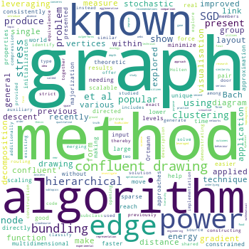

Jonathan Zheng
Lab member: 2016-2020

Jonathan Zheng was a PhD student, working on interactive systems for visualising the behaviour of ecosystems and neural networks. He was jointly supervised by Samraat Pawar. You can download the ecosystems game he designed at the EcoBuilder website.
Publications
Note that only publications as part of the Neural Reckoning group are included here (see external publications below for full list).
2021
-
Zheng JX, Pawar S, Goodman DFM (2021)
Further Towards Unambiguous Edge Bundling: Investigating Power-Confluent Drawings for Network Visualization.
IEEE Transactions on Visualization and Computer Graphics -
Zheng JX (2021)
Advances in network visualisation with an application to serious games.
PhD thesis, Imperial College London
2018
-
Zheng JX, Pawar S, Goodman DFM (2018)
Confluent* Drawings by Hierarchical Clustering.
Graph Drawing and Network Visualization -
Zheng JX, Pawar S, Goodman DFM (2018)
Graph Drawing by Stochastic Gradient Descent.
IEEE Transactions on Visualization and Computer Graphics - + 1 conference paper
External publications
This is a short preview of the publications from other sources (ORCID, Semantic Scholar). Note that publications from work done outside the Neural Reckoning group are included in this list.
2021
- Jonathan X. Zheng, Samraat Pawar, Dan F. M. Goodman (2021)
Further Towards Unambiguous Edge Bundling: Investigating Power-Confluent Drawings for Network Visualization
IEEE Transactions on Visualization and Computer Graphics
2019
- Jonathan X. Zheng, Samraat Pawar, Dan F. M. Goodman (2019)
Graph Drawing by Stochastic Gradient Descent
IEEE Transactions on Visualization and Computer Graphics
2018
2017